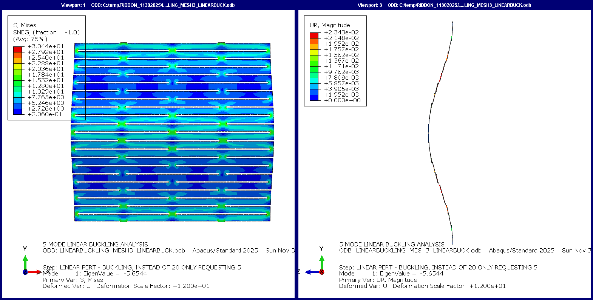
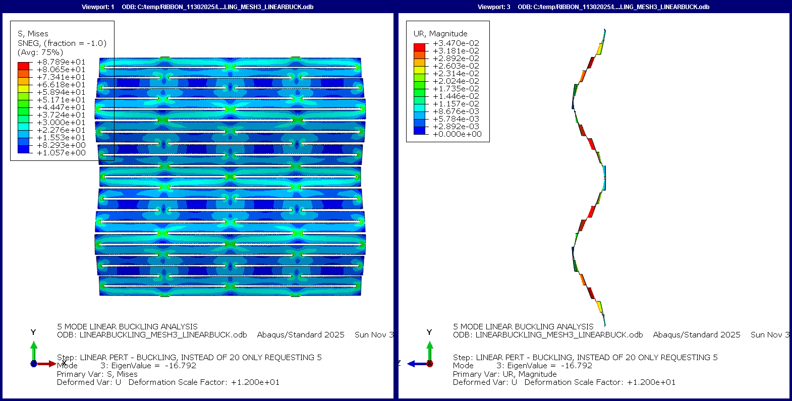
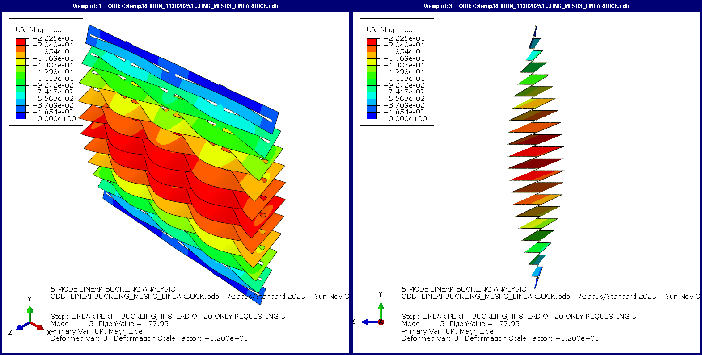

Kirigami Energy Dissipation
This research investigates kirigami cut patterns as programmable geometric imperfections capable of controlling deformation, instability, and energy absorption in thin metallic sheets and shell structures. Rather than treating buckling as structural failure, instability becomes an intentional design mechanism for tailoring force–displacement response and energy dissipation.
Geometry Programming
The foundation of this work is the kirigami unit cell. Rather than treating cut geometry as decorative, ligament width, hinge geometry, unit-cell dimensions and spatial grading become design variables governing stiffness, instability and deformation sequencing.


Eigenvalue Buckling
Prestress-dependent eigenmodes are treated as design primitives rather than indicators of failure. The lowest modes define preferred deformation pathways, providing a means of programming localization before nonlinear collapse begins.

Finite Element Analysis
Abaqus eigenvalue buckling and nonlinear post-buckling analyses were used to investigate instability localization, mesh convergence and stress propagation through graded kirigami ribbons. Controlled geometric imperfections seeded the nonlinear response and enabled comparison between analytical predictions and numerical behavior.


Experimental Validation
Laser-cut aluminum specimens were fabricated and tested to compare observed deformation pathways with finite element predictions. The experiments confirmed that geometry alone strongly influences instability activation, rotation of the unit cells and global force–displacement behavior.


Energy Dissipation
Traditional thin sheets delay significant energy absorption until material yielding or fracture occurs. By introducing engineered kirigami geometries, deformation can instead be localized, propagated and sequenced through geometric instability. The resulting structures behave as programmable mechanical systems whose force–displacement response is governed primarily by geometry rather than material alone.
Applications
Although developed as a study in nonlinear structural mechanics, the broader objective is the creation of programmable energy-absorbing systems. By embedding deformation pathways directly into geometry, kirigami structures offer an alternative to conventional crush mechanisms that depend primarily on material yielding. Potential applications include crash attenuation, fall-arrest devices, protective infrastructure, deployable structures, adaptive façades and lightweight energy-dissipating components for aerospace and civil engineering.
Research Direction
Current work expands these concepts beyond flat ribbon specimens toward curved shells and thin-walled cylinders. Spatial grading of unit-cell geometry is used to localize prestress-dependent eigenmodes, allowing deformation to propagate in a prescribed sequence. The long-term goal is a geometry-based framework for programming force–displacement response using mechanics rather than material alone.
Selected Image Archive


